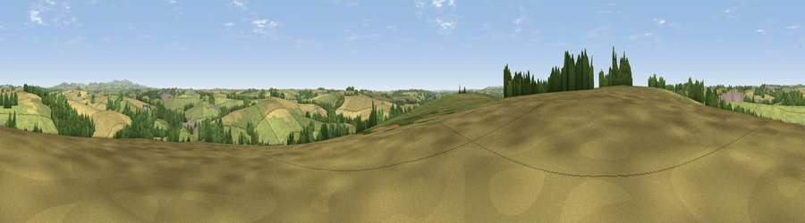

Viewpoint near Tresillian
#33104 in England · top 62% of its area beats it · near TresillianWhere it is
The exact computed spot (SW 86225 46875). Click the marker for map links.
The view, rendered

A 360° render of this exact spot computed from the terrain model, tree cover and land cover — summer colours, afternoon light, calibrated against photographs of famous viewpoints. Real trees, hedges and buildings will differ in detail.
The panorama
Grey silhouette: terrain skyline in each direction (720 bearings, Earth curvature and refraction included). Dashed green: skyline with trees (+15 m) and buildings (+8 m) as obstacles. Blue strip: how far the ground is visible on each bearing.
Where the view opens
Wedge length = distance to the farthest visible ground on that bearing (vegetation-aware). Rings at 10, 25 and 50 km.
What fills the view
53% grassland · 30% cropland · 15% woodland · 1% built-up
Angular shares of the visible panorama (visual magnitude), not map area. Landscape diversity 0.46 (0–1 Shannon).
Key numbers
More beautiful places nearby
The staircase of upgrades: each row has a higher view potential than everything closer. Driving times are estimates from straight-line distance, calibrated against real road routing — check an actual route before setting out.
| Place | Direction | Drive | Score |
|---|---|---|---|
| Viewpoint near Tresillian | SSW · 1 km | ~2 min | 49.3 |
| Viewpoint near St. Michael Penkevil | SSE · 4 km | ~9 min | 50.0 |
| Viewpoint near Ruan Lanihorne | SSE · 5 km | ~11 min | 51.0 |
| Viewpoint near Ladock | NNE · 7 km | ~14 min | 51.2 |
| Viewpoint near Trispen | N · 7 km | ~14 min | 58.5 |
| Viewpoint near St. Newlyn East | NNW · 7 km | ~15 min | 70.6 |
| Curgurrell Hill | SSE · 9 km | ~18 min | 71.5 |
| Viewpoint near Trethosa | NE · 10 km | ~19 min | 78.5 |
50.28303, -5.00205 · source: screening · position refined by local search. Computed location — check access rights before visiting.